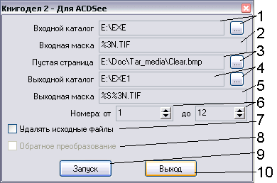

Назад
~BookGen2
Описание:
Приходилось ли Вам когда-нибудь копировать небольшие книги (т.н. брошюры)? Если да, то как вы это делали?
Копировать разворот каждой страницы на отдельный лист - непозволительная роскошь (вторая сторона остается
чистой), использование второй строны для копирования приводит к уменьшению комфортабельности использования копии.
Гораздо лучше выполнить копию книжки как такую же книгу. Но разбирать книгу на отдельные страницы долго, да
и не всегда возможно, особенно если нужно скопировать лишь маленький кусок большой книги...
Я предлагаю компромисс. Вы сканируете (увы, программа лишь для компьютера, но не для ксерокса) развороты книги,
сохраняете каждую страницу (резать можно вручную, но лучше воспользоваться FineReader'ом - он разрежет листы как
надо, а распознавать текст не нужно - его придется потом править, что займет очень много времени) в любом формате
(рекомендую tif - именно в нем сохраняет страницы FineReader), запустить эту программу, преобразовать
последовательность страниц в последовательность листов и печатать их в ACDSee. Вероятно, можно выполнить
аналогичные действия и для других программ, но я рассчитывал на использование именно ACDSee.
Для печати, выполните следующие действия:
- Отсканируйте все развороты страниц книги (либо необходимый кусок), после чего разрежьте его на отдельные
страницы. Для этого лучше всего использовать программу FineReader: нужно указать в опциях "Делить разворот книги",
затем экспортировать все файлы разворотов в пакет. После этого в пакете появятся файлы вида 0001.tif, 0002.tif.
Эти файлы нам и нужны.
- Если файлы были отсканированы сразу постранично, то необходимо привести их к корректному виду. Страницы
должны образовывать сплошной диапазон, без разрывов! Например, page001.tif, page002.tif,...,page100.tif -
допустим, но page001.tif, page003.tif,... - нет. Даже если файлы сохранены под именами page1.tif, page2.tif,...,
page10.tif, то их печать также возможна.
- Обработайте файлы в любом графическом редакторе, как то: удалите черные границы по краям, настройте яркость
и контраст, приведите к черно-белому изображению (если сканировался только текст, то это только улучшит результат).
- Запустите преобразователь. Укажите в качестве входного каталога каталог пакета FineReader или место, где
лежат сканированные файлы. Укажите правильные маски (для FineReader правильными масками будут %4d.tif для входных
файлов и %s%4d.tif для выходных) и правильный выходной каталог (любой, лишь бы на диске было достаточно места).
Укажите правильный диапазон и снимите галку "Удалять исходные файлы".
- Итак, мы получили желаемый результат - набор файлов. Запускаем ACDSee, открываем каталог с выходными
файлами и выделяем все файлы со значением поля s=1. Теперь даем команду на печать. Откроется окно настройки
принтера. Нажмите "Свойства". Теперь на вкладке "Бумага" (настройки на главной странице - по вкусу) установите
(ЭТО ОБЯЗАТЕЛЬНО!!!) флаг "Разворот", в графе "Размер страницы" выберите A5, в графе "Размер бумаги" - A4,
ориентация - портретная (книжная). На вкладке "Параметры" убедитесь, что в разделе "Разворот" установлен
порядок страниц справа налево и число страниц - 2. Эти настройки верны только для русскоязычного драйвера, у
англоязычного есть небольшая особенность, подробнее смотрите англоязычное описание! Все! Мы готовы!
- Кнопка ОК перенесет нас на следующий диалог. Здесь все понятно, настраиваем и печатаем.
Через некоторое время (зависит от числа страниц и скорости Вашего принтера) можно отправлять на печать
оставшиеся страница (с полем s=2). Если в принтер заправлено ровно столько страниц, сколько сказала
программа, отправлять на печать можно сразу обе партии, иначе следует подождать, пока закончится печать
первой. При печати второй партии воспользуйтесь тем же алгоритмом, что и в первом случае. ОБЯЗАТЕЛЬНО
убедитесь в правильности настроек принтера.
- После окончания печати первой партии (независимо от того, отправлена ли следующая партия) переверните
листы бумаги вокруг короткой стороны и продолжайте печать.
- После окончания печати второй партии можете поздравить себя с созданием новой книги. Осталось только
согнуть листы и сшить их степлером. Если Вы не хотите больше печатать книг, удалите выходные файлы.
- ВСЕ!!!

- Входной каталог. Вряд ли имеет смысл комментировать, это каталог, где лежат входные
файлы (сканированные и порезанные страницы). Для ввода его значения используйте кнопку справа.
- Маска входных файлов. Это просто имя файла, в котором должно присутствовать поле типа %#n, где # - любое
число от 1 до 8. Оно может отсутствовать, тогда будет принято значение 1. Это поле будет принимать
последовательно целочисленные значения ширины #. То есть если указать page%3n.tif, то программа будет
перебирать файлы типа page000.tif, page001.tif,... Естественно, число будет принадлежать указанному диапазону
(см. ниже). Имя каталога в маске указывать нельзя. Поле можно тоже не указывать, тогда прога ничего делать
не будет. Так что можете экспериментировать на здоровье! Регистр значения не имеет.
- Пустая страница. Проблема в том, что для книг с числом страниц, не кратным 4 приходится некоторые страницы
искусственно делать пустыми. Можно использовать свою страницу, а можно - прилагаемый файл clear.bmp - это
просто монохромный белый рисунок 10x10 пикселей. Укажите путь к нему используя кнопку справа. Можно просто
дописать последние страницы пустыми до общего числа, кратного 4.
- Выходной каталог. Справа - кнопка ввода значения. В этот каталог будут помещены новые файлы. Выходной
каталог может совпадать с входным, но делать это я настоятельно не рекомендую.
- Выходная маска. Почти то же, что и входная маска, но есть еще одно обязательное поле - %s. Его неуказание
приведет к перезаписи файлов с первой стороны файлами второй стороны. Для файлов первой стороны поле будет
заменено на значение 1, для второй стороны - 2. Рекомендую, чтобы это поле предшествовало полю %#n чтобы
в файловом менеджере ACDSee файлы первой стороны стояли перед файлами второй стороны.
- Границы изменения - диапазон, в котором будет происходить поиск файлов (от...до). Если Вам нужно
распечатать все файлы из каталога, то диапазон может быть много шире реального - прога поймет что к чему
и выберет первый сплошной диапазон и указанного (потому в диапазоне и не должно быть разрывов!), иначе точно
укажите, какой диапазон нужно обрабатывать.
- Переносить ли в конечный каталог. Вместо копирования переносит файлы. НЕ РЕКОМЕНДУЮ использовать этот
режим, если у вас достаточно места на диске.
- Обратное преобразование. Если Вы воспользовались режимом переноса файлов в конечный каталог, то потеряли
исходные файлы. Для восстановления начальной нумерации должен был использоваться этот режим. К сожалению,
в этой версии этот режим может работать некорректно. Я настоятельно НЕ РЕКОМЕНДУЮ пользоваться этим режимом.
- Кнопка запуск, как легко догадаться, инициирует процесс. Во время работы программа может выдать запросы
на перезапись и удаление - там все понятно. Последний диалог сообщает, сколько страниц Вам придется засунуть
в принтер. Больше этого числа ложить не нужно, но и меньше - тоже. Также можно запустить процесс нажатием
кнопки Enter в полях ввода.
- Выход. Сохраняет параметры. Можно выйти по нажатию Esc.
Особенности:
- Программа была написана для личного использования, поэтому я не гарантирую, что она будет удовлетворять
вашим требованиям. Ее использование нельзя назвать удобным, но если вам это не нравится - поищите что
нибудь другое.
- При тестировании программы использовались FineReader 5.0 и ACDSee 4.0